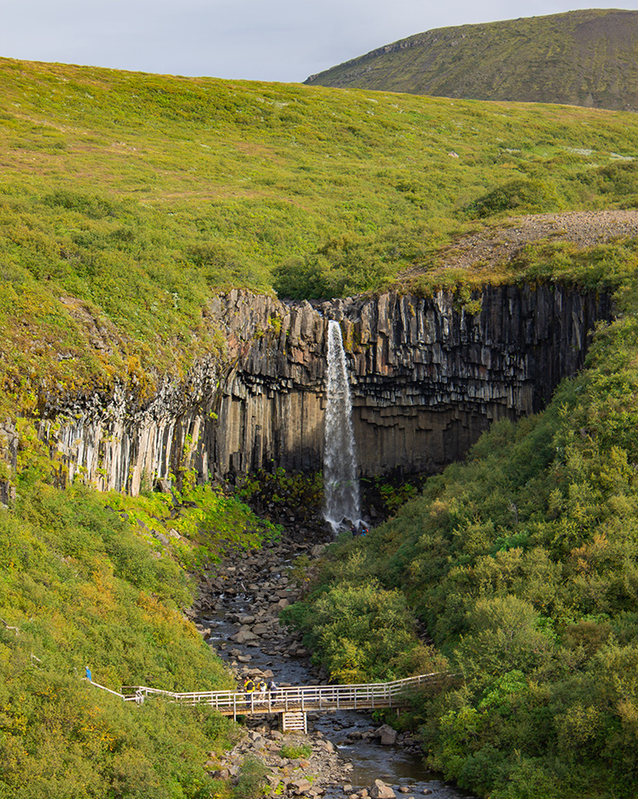
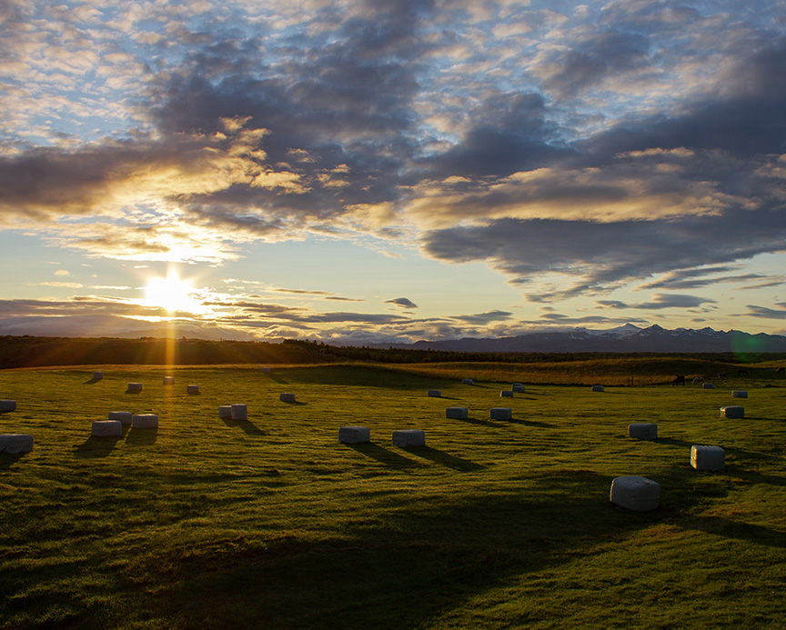
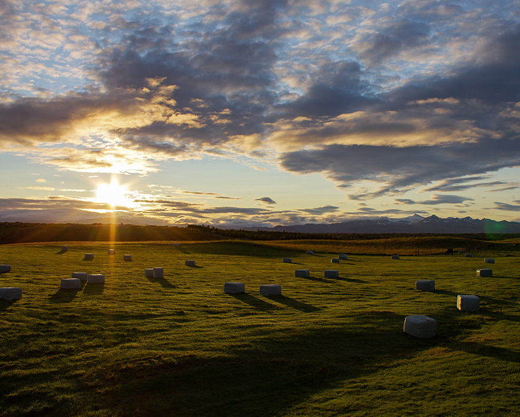
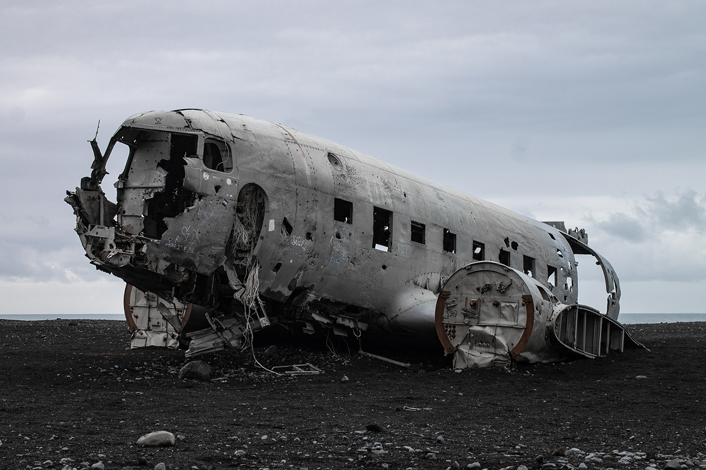

During the last week of summer in 2018 (August 24th - September 1st), I went on a week-long trip to the amazing country of Iceland. It was an unbelievable experience that I will forever be grateful for.
We decided to rent a car and drive around to a different location every day. Our general itinerary is displayed in the table below.
| Daily Schedule | ||
| Day | Location | Activities |
| 1 | Reykjavik | Blue Lagoon |
| 2 | Reykholt | Langjokull Glacier Tour |
| 3 | Stykkisholmur | Driving/Hiking |
| 4 | Hella | Hiking to plane crash site |
| 5 | Kalfafell | Glacier Lagoon |
| 6 | Vik | Dive Between Tectonic Plates |
| 7 | Reykjavik | Driving the Golden Circle |
While there, I got the oportunity to visit many different waterfalls. My favorite one was Svartifoss. It took a bit of hiking to get to, but ended up being amazing.
Other waterfalls I visited include:
Impossible to pronounce and impossibly beautiful. This was another of my favorite places in Iceland.
In Iceland I also got to do some amazing photography!
I took photos of:
 

In Iceland there is a site of a plane wreck on the black sand beaches of Sólheimasandur. It is from a US Navy DC - 3 plane which crashed in 1973. Every member of the crew survived the crash. They disassembled the plane for salvageable parts and left the rest. To this day, the plane still remains on that very same beach. I got the opportunity to see the plane in person and take my favorite picture of the trip.
